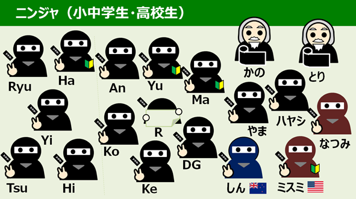
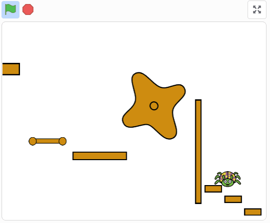
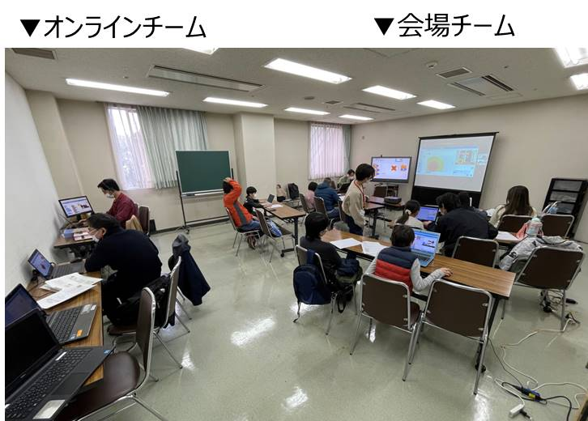
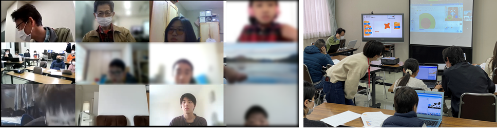
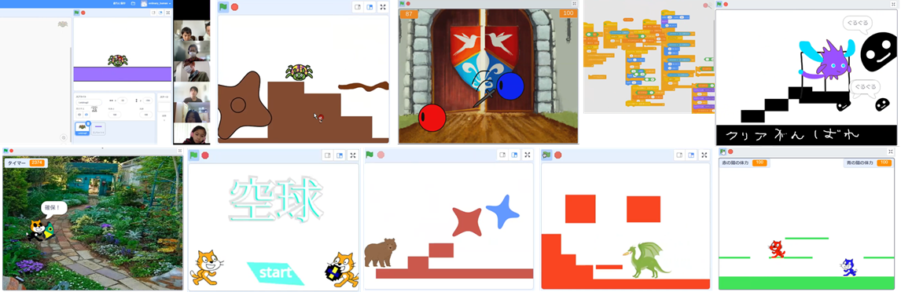
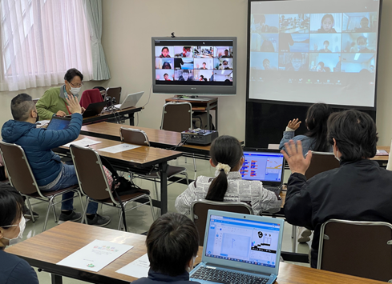

今日も会場とオンラインで、３つのテーマ「初めて参加」「自分で好きなテーマ」「みんなで一緒のテーマ」から選んでワークショップ開始。Scratchの経験が少ない人手もゲームが作れるように一つの要素毎に区切って説明と作業を繰り返して作品をつくりました。
👩👧👧なんとニンジャ11名（会場5家族,オンライン6名）と米国東海岸および南半球ニュージーランドからユースメンタ2名、大学から社会人までメンター5名で、総勢18名が参加してくれました。そのうち青梅に初参加は4名です。

みんなでScratchを使って「くものアスレチック」を作ります。「キーボードで移動したり」「重力で落下したり」の命令ブロックのひとかたまりになる動作を体験していく流れです。２回目以降に継続してマリオブラザーズみたいなゲームを目指すとりくみです。１回目は基礎的な動作をひと通り制作しました。

オンラインチームと会場チームと一緒にプログラミングしています。11月なので寒いけれど窓の換気は十分に,,十分過ぎたかも,,,寒い,,,,かな。

オンラインではとても嬉しい積極的な質問がたくさん。会場からもオンラインで参加してブレークアウトルームでプログラミングの相談を受け付けました。なかなかの高度な質問にメンターも考えるやりがいがあります。その質問の回答はどうだったかなど、イベント終了後にメンター間で復習もしました。

ワークショップで制作した作品、もしくは自分で取り組んでいる作品を発表するのですが、毎回、われ先にと挙手をして率先発表してくれます。本日もみんな個性ある作品をたくさん発表してくれました。楽しいことに、大人メンターは教科書通りに作る傾向があるのですが、ニンジャたちは教科書通りには作りません。自分の好きな色やキャラクターを自由に選びます。とっても良い事です、その調子で自由な気持ちを忘れないでほしいです。

みなさん、お疲れさまでした。次回は「くものアスレチック」の続編を予定しています。だんだんプログラムが進化してゲームらしくなっていきますよ。お楽しみに。

子どもたちのScratch作品は↓ここで
CoderDojo青梅 Scratchスタジオまたねー。🙋♂️